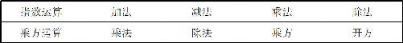

不是一个数字，它分明只是说明了这是2在开平方．既然每个数字都是一个算式，与所有数字类型对应的也就有多个算式类型．与整数对应的有整式，与分数对应的有分式，与无理数对应的有根式；并且，因为每一种数字都有自己的加减乘除法则，所以，每种算式也有自己的加减乘除法则．
不是一个数字，它分明只是说明了这是2在开平方．既然每个数字都是一个算式，与所有数字类型对应的也就有多个算式类型．与整数对应的有整式，与分数对应的有分式，与无理数对应的有根式；并且，因为每一种数字都有自己的加减乘除法则，所以，每种算式也有自己的加减乘除法则．到目前为止，初中阶段所涉及的六种运算方式（加、减、乘、除、乘方、开方）全学完了．为了夯实基础，我们来回顾一下这些运算法则，看看其中存在哪些普遍的规律，又有哪些不能触碰的禁忌．
首先，一切算法全部都是从最简单的加法派生而来的，乘法的本质是多个相等的数相加，乘方是多个相同的数相乘．无论是加法、乘法，还是乘方，都属于正向的计算，因此其结果都只能是自然数，不会带来新的数字类型．
其次，加法、乘法、乘方产生以后，就分别产生了自己的逆运算，那就是减法、除法和开方．与此同时，每一种逆向运算法则，都产生了原来从未遇到的数字类型：减法产生了负数，除法产生了分数（或者说小数和循环小数），开方产生了无理数（或者说无限不循环小数）．我们也曾提到，在人类历史上，无论是负数、0，还是无理数，每一种数系的产生都经历了非常痛苦的历程．
最后，这些算法之间的相似性：乘法的交换律、结合律和加法交换律、结合律形式上完全一致；同底数幂相乘的规律，跟乘法的分配律极其相似；任何一种逆运算都可以表达成正向运算的方式，比如，减法可以被认为是加上一个负数，除法可以被认为是乘以一个倒数，开方可以被认为是一种指数是分数的计算．一旦理解了这一点，所有适用于加法的运算规则，同样适用于减法；适用于乘法的运算规则，同样适用于除法；而适用于乘方的运算规则，同样适用于开方．
尤其精妙的是，指数的运算规则是可以简化降级的：在指数这样小小的位置上，也有着正数、负数、整数和分数，整个有理数的集合一个不少，所有加减乘除的四则运算一个不缺．其中，指数的加法对应着幂的乘法，减法对应着幂的除法，乘法对应着幂的乘方，除法对应着幂的开方，从乘、除、乘方、开方变成了加、减、乘、除，整个计算的难度降低了一个级别．（见表11－1）
表11－1

这样高度的相似性，这样巧妙的设计，不由让我们发出感叹，整座数学大厦是多么的精巧；这样精巧的结构，也很容易让我们产生错觉，我们会误以为所有的运算顺序都是可以打乱的，误以为任何两个数字都是可以加减乘除的．因此，我们还需要特别注意这些算法的禁忌．
首先是计算顺序的问题．在任何一个算式中，括号里的内容总是优先计算的，而且如果算式中有多个括号，优先计算的是最里边的内容；排在括号之后的，是乘方和开方的运算，这两者的优先级相同；然后是乘除法运算；最后是加减法．这样的运算顺序优先级是绝对不可以随意打乱的，只有在同一优先级别的运算之间可以相互调整顺序．
计算优先级：括弧＞乘方和开方＞乘除＞加减
其次是不能把适用于一类算法的规则错误地移植到其他运算中去．比如，我们看到同底数幂相乘的规则很简单，就误以为，同底数幂相加的时候，也是可以底数不变、指数相加的；我们看到分数相乘的时候分子乘分子、分母乘分母，就误以为分数相加的时候，也是分子加分子、分母加分母的，这样虽然形式上看上去很美，但其结果却是错误的．所以我们要知道，数学的美，一定要建立在真实的基础上，一定要深刻理解算法的本质，不能随心所欲地捏造一个规则出来．
最后是尽管运算规则有六种，但绝不是每一种数字都能参与到计算中去的．比如，0不能做分母；0做底数时，指数只能是正数；负数不能开平方；开平方的结果是非负数．这些规则的存在，使我们在解题时要作出双向的判断：首先要根据题意，判断题目本身有意义的情况下，那些字母变量的取值范围；然后要在求解完成以后，根据可能的取值范围，再次进行判断，在判断时，正数、负数、0、整数、分数都是日常要考虑的．尤其是0的存在．
为了便于理解和记忆，我曾经打了一个比方：加减法是数字的老祖母0负责管理的，所以加减法可以任意交换；乘除法和乘方开方是数字的老祖父1负责管理的，所以乘除法和乘方开方就能任意调整．而且我们还知道，所有的数字就其本质而言都是一个算式，在学习无理数的时候，我们再次感受到了这样的规律．很明显，
不是一个数字，它分明只是说明了这是2在开平方．既然每个数字都是一个算式，与所有数字类型对应的也就有多个算式类型．与整数对应的有整式，与分数对应的有分式，与无理数对应的有根式；并且，因为每一种数字都有自己的加减乘除法则，所以，每种算式也有自己的加减乘除法则．
计算数字的目的，是为了得到最后的得数；计算代数表达式的目的，是为了得到最简单的算式．什么是最简算式？最简算式，就是计算步骤尽量少、数字尽量少、计算规则尽量简单的算式．比如，在a b ＋a c 这个算式中，有两次乘法运算和一次加法运算，先后一共有三次运算，如果我们按照乘法分配律，把它变成a （b ＋c ），那么三次计算就变成了一次加法和一次乘法共两次计算，这样我们就可以认为算式得到了化简．同样，因为根式和分式的计算比较复杂，所以我们会要求根式化简的时候，根号里头没有分母，分母里没有根式．
整个初中代数就是算式子，内容包括加式加加式、加式减加式、加式加减式、加式减减式等．按照这个架构，最后剩下的，就是加减式之间的相互乘除．